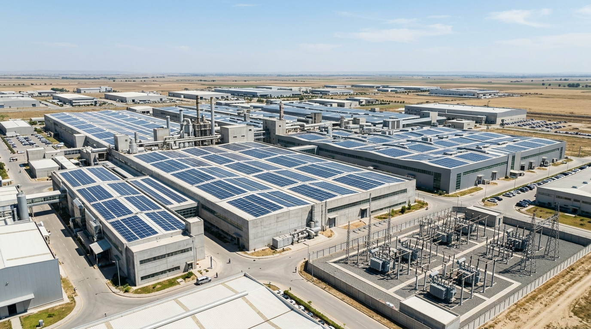
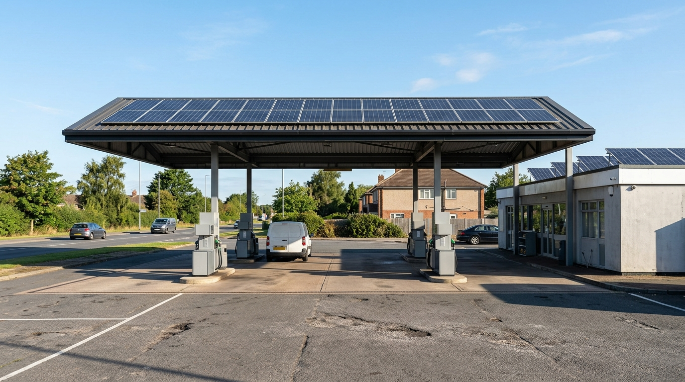
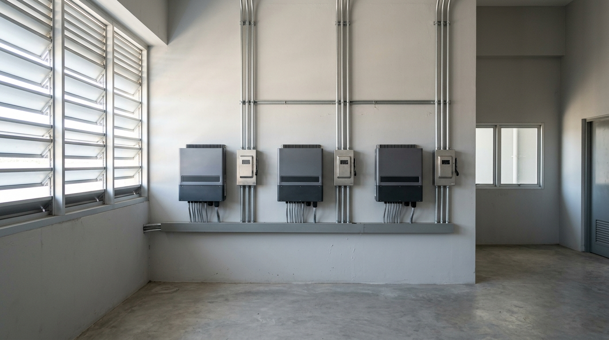
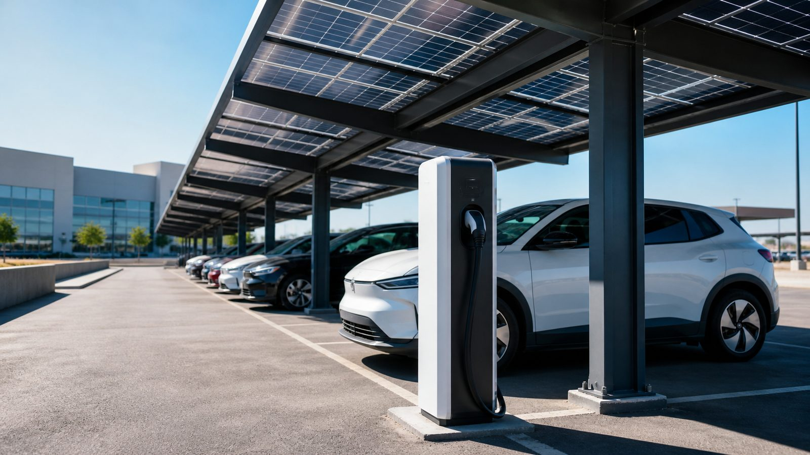
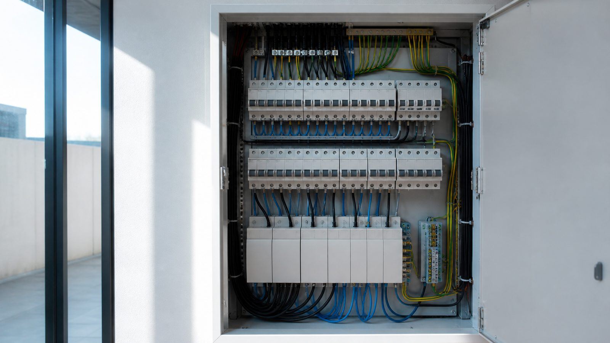
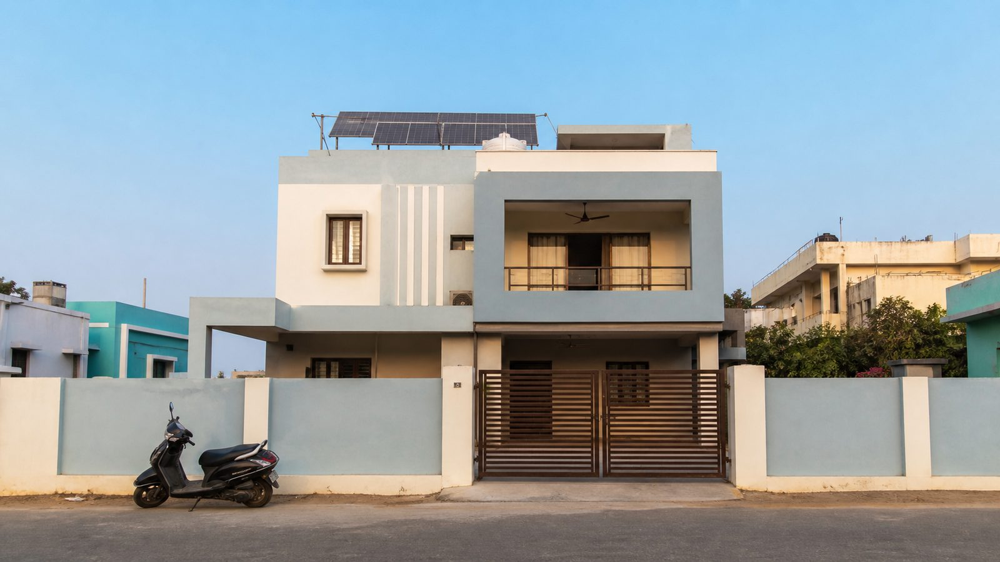
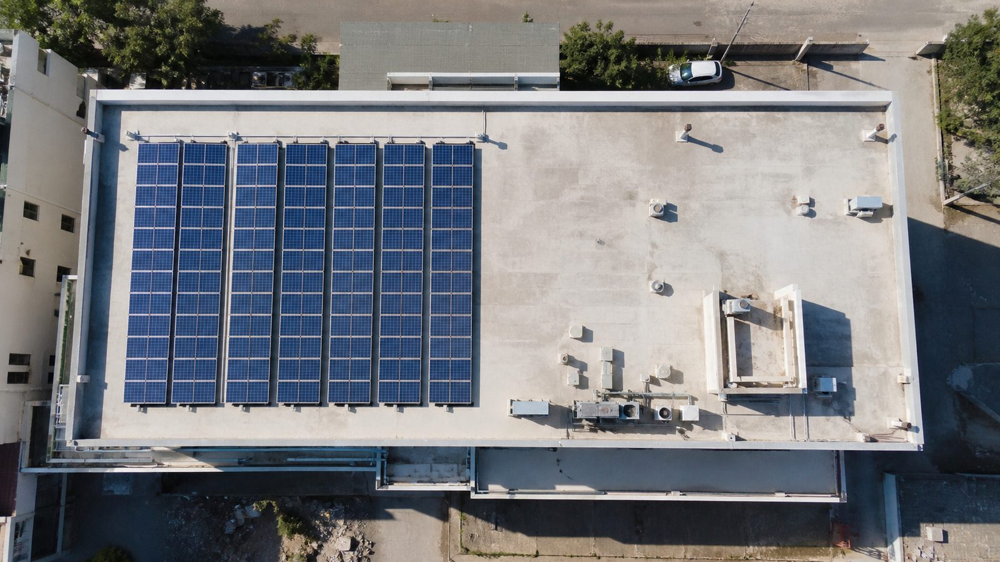

Ray2Volt Solar Blog
Practical rooftop solar guidance, financial breakdowns, subsidy walkthroughs, and technology comparisons for Indian homes and businesses.

Solar for Textile & Spinning Mills: 400 kWp Case Study & Harmonics Management
Cotton yarn spinning mills consume continuous round-the-clock power where energy represents up to 40% of manufacturing costs. Here is how a 400 kWp industrial solar installation in Andhra Pradesh slashes HT demand and energy charges.

Solar for Petrol Pumps in India: 20 kWp Hybrid Case Study & PESO Safety
Fuel retail outlets face frequent highway power cuts, noisy diesel generator running costs, and strict PESO hazardous zone mandates. Here is how a 20 kWp hybrid solar solution solves all three.
Solar for Warehouses & Logistics Hubs: 300 kWp Case Study & Roof Monetization
Logistics hubs have vast metal roofs but low internal electrical demand. Here is how a 300 kWp installation in Sri City turns empty warehouse tin into a revenue-generating solar power station.
Solar for Hotels & Resorts in India: 60 kWp Case Study & Energy Cost Optimization
Hospitality businesses face high commercial power tariffs driven by 24/7 HVAC, water chilling, and banquet loads. Here is how a 60 kWp rooftop solar plant saves ₹7.8 Lakhs annually for a business hotel in Tirupati.
Solar for Schools & Colleges in India: 120 kWp Educational Campus Case Study
Educational institutions have vast unshaded classroom roofs and operate strictly during peak solar hours. Here is how a 120 kWp campus solar plant saves ₹14 Lakhs annually for a college trust in Andhra Pradesh.
Solar for Hospitals in India: 80 kWp Hybrid Case Study & Power Reliability
Healthcare facilities cannot tolerate a single flicker in ICUs or surgical theatres. Here is how an 80 kWp hybrid solar + lithium battery plant in Tirupati cuts commercial tariffs and displaces costly diesel generators.
Tier-1 Solar Panel Brands in India (2026): Waaree, Adani, Tata & Premier
BloombergNEF tiering, ALMM List-I and List-II compliance, Mono PERC versus N-type TOPCon, and real-world temperature degradation compared across India's top solar module manufacturers.
Solar for Rice Mills in India: 200 kWp Case Study, Heavy Motor Loads & ROI
Modern parboiled and raw rice mills run induction motors non-stop. Here is how a 200 kWp rooftop solar installation in Srikalahasti handles inductive spikes, dust, and cuts HT power bills by ₹25 Lakhs per year.

Top Solar Inverter Brands in India (2026): Deye, Sungrow, Growatt & Polycab
An honest, engineering-level comparison of the leading on-grid and hybrid string inverters in the Indian market — efficiency, MPPT flexibility, local service networks, and real failure rates.
Solar for Cold Storage in India: 150 kWp Case Study, Sizing & Payback
Refrigeration compressors run continuously in intense daytime heat. Here is how a 150 kWp commercial solar plant slashes HT industrial tariffs and diesel run-hours at an agro cold storage facility in Andhra Pradesh.
Going Solar in Tirupati and Srikalahasti: A Local Homeowner's Guide
Local irradiance, APSPDCL paperwork, monsoon and dust realities, typical system sizes in the district, and what a Tirupati rooftop actually generates through the year.
How to Choose a Solar Installer in India: 12 Questions Before You Sign
The cheapest quote is almost never the cheapest system. The questions, documents, and red flags that separate a serious installer from a cut-price one.
Rooftop Solar ROI: How Long Until Your System Actually Pays for Itself?
A transparent payback calculation for a typical Indian home and a typical business — including the assumptions most savings claims quietly hide from you.

Solar Carports and EV Charging: Powering Your Fleet From the Roof
Parking areas are unused generation space. How solar carports work structurally, what they cost versus a rooftop plant, and how they pair with EV charging loads.
Solar Plus Battery Storage in 2026: Is a Hybrid System Worth It Yet?
Lithium prices have fallen but batteries still change the maths. When backup genuinely pays for itself, how to size a battery bank, and when to skip it entirely.

How to Read a Commercial Electricity Bill and Find Your Solar Savings
Sanctioned load, contract demand, energy charges, demand charges, power factor penalties — line by line, and exactly which of them solar can and cannot reduce.
Solar for Factories: Cutting Manufacturing Power Costs in India
Why a single-shift factory is close to the perfect solar customer — daytime load matching, demand charges, shed roof structures, and what a realistic plant sizing looks like.
Accelerated Depreciation on Solar: The 40% Tax Benefit Explained
How accelerated depreciation shortens the effective payback for a profit-making business, with a worked example and the conditions that decide whether you qualify.
CAPEX vs OPEX (RESCO) Solar: Which Model Fits Your Business?
Own the asset or just buy the power? A side-by-side of capital outlay, tariff structure, balance-sheet treatment, O&M responsibility, and end-of-term ownership.

DCR vs Non-DCR Panels and ALMM: What the 2026 List-II Shift Means
ALMM List-I and List-II, why domestic content rules now reach commercial projects, and what the DCR cost premium does to a C&I quotation in 2026.

Solar Loans in India: Financing a Rooftop System Without Big Upfront Cash
How solar loans work, typical tenures and rates, the EMI-versus-bill-savings test, and the documents banks ask for when the subsidy is part of the picture.
How to Apply for the PM Surya Ghar Subsidy: Step-by-Step Walkthrough
Registration, vendor selection, feasibility approval, installation, net meter, inspection, and subsidy credit — the full portal journey with the documents needed at each stage.
PM Surya Ghar Muft Bijli Yojana: Complete Subsidy Guide for 2026
Slab-wise subsidy amounts, who is eligible, what DCR panels have to do with it, and why the scheme's March 2027 deadline should shape when you decide.

Solar Warranties Decoded: Product, Performance, and Workmanship Cover
A 30-year number on a brochure means very little on its own. Here is what each warranty layer really covers, who honours it, and the clauses that void your claim.
Solar Panel Maintenance: A Practical Cleaning and Upkeep Guide for India
Dust, bird droppings, and monsoon shading quietly eat 5–20% of your generation. A realistic cleaning schedule, safety rules, and the annual checks that actually matter.

What Is a Solar Inverter? String, Micro, and Hybrid Inverters Compared
The inverter is the brain of your solar plant and the part most likely to need replacing. Here is how the three types differ and how to size and pick one.

Solar Panel Types Explained: Mono PERC, TOPCon, and Bifacial
Cell technology, efficiency, degradation, and heat behaviour compared — plus which panel type is genuinely worth paying more for on an Indian rooftop.
Net Metering in Andhra Pradesh: How Your Meter Runs Backwards
What net metering actually is, how export credits are settled with your DISCOM, the paperwork involved, and why the meter approval step decides your commissioning date.

How to Size a Solar System for Your Home: kW, Units, and Roof Space
Work out the right kW rating from your own electricity bill, check whether your roof can physically take it, and avoid the two sizing mistakes that cost people money.
On-Grid vs Off-Grid vs Hybrid Solar: Which System Is Right for You?
The three system types, what each one costs, what each one does during a power cut, and a decision table that tells you which one actually fits your home or business.
How Rooftop Solar Works: A Complete Beginner's Guide for Indian Homes
From sunlight hitting the panel to units spinning off your electricity bill — the whole rooftop solar chain explained in plain English, with no engineering jargon.
No posts in this category yet.